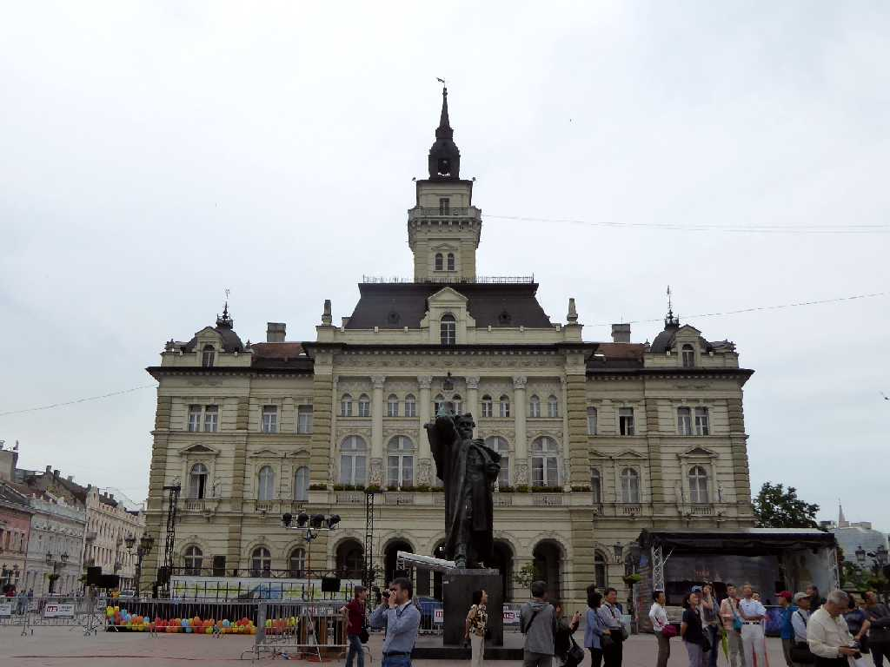
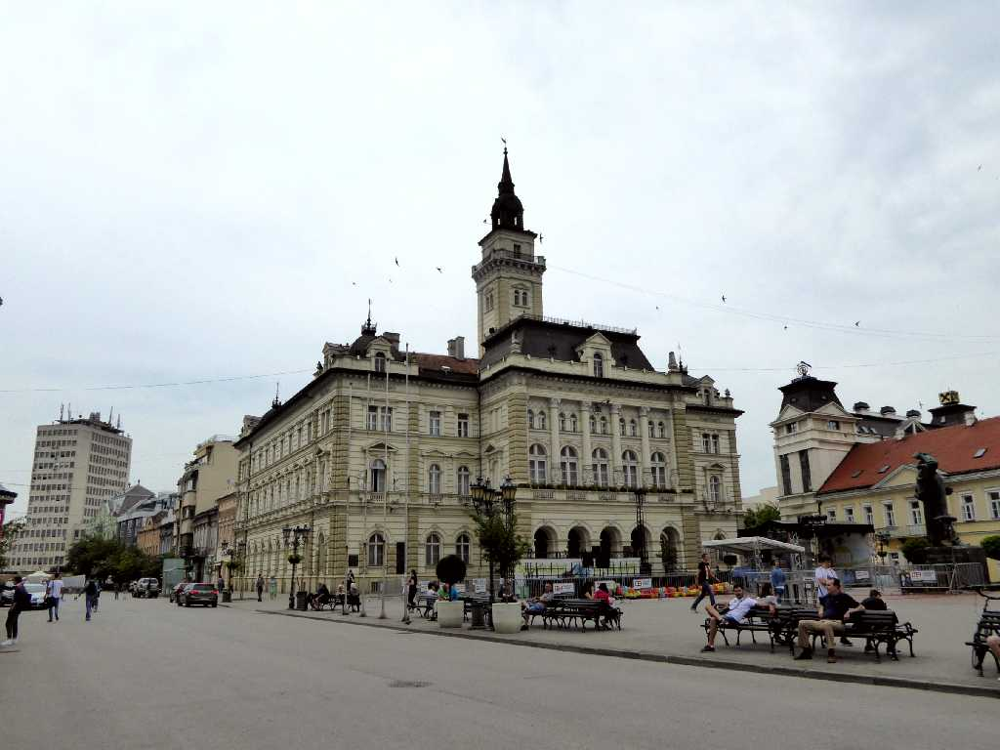
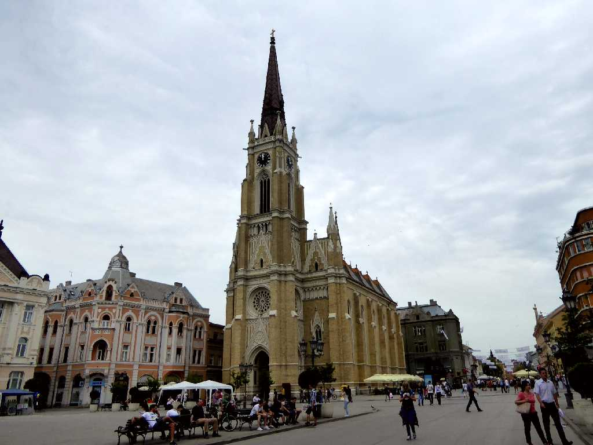
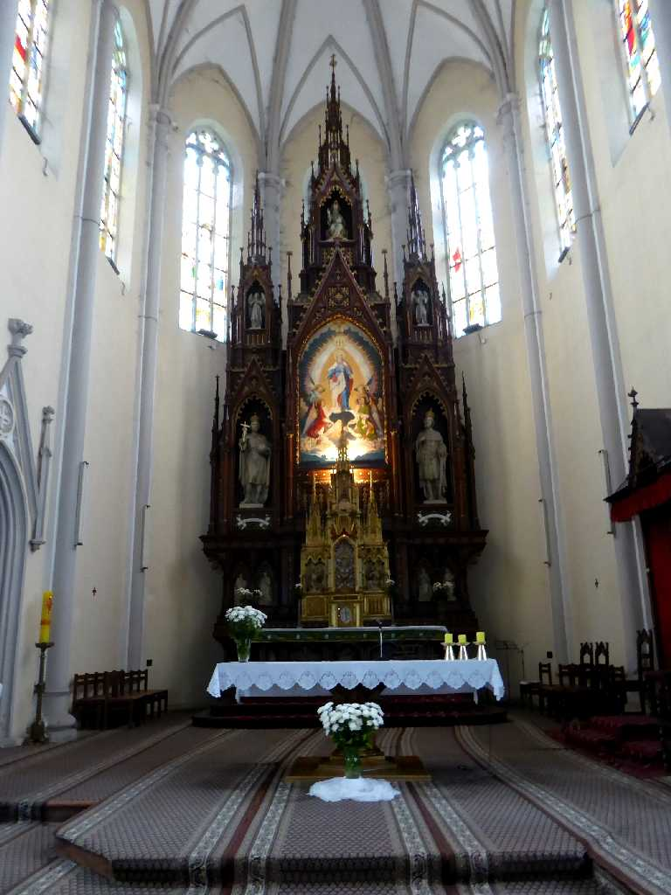
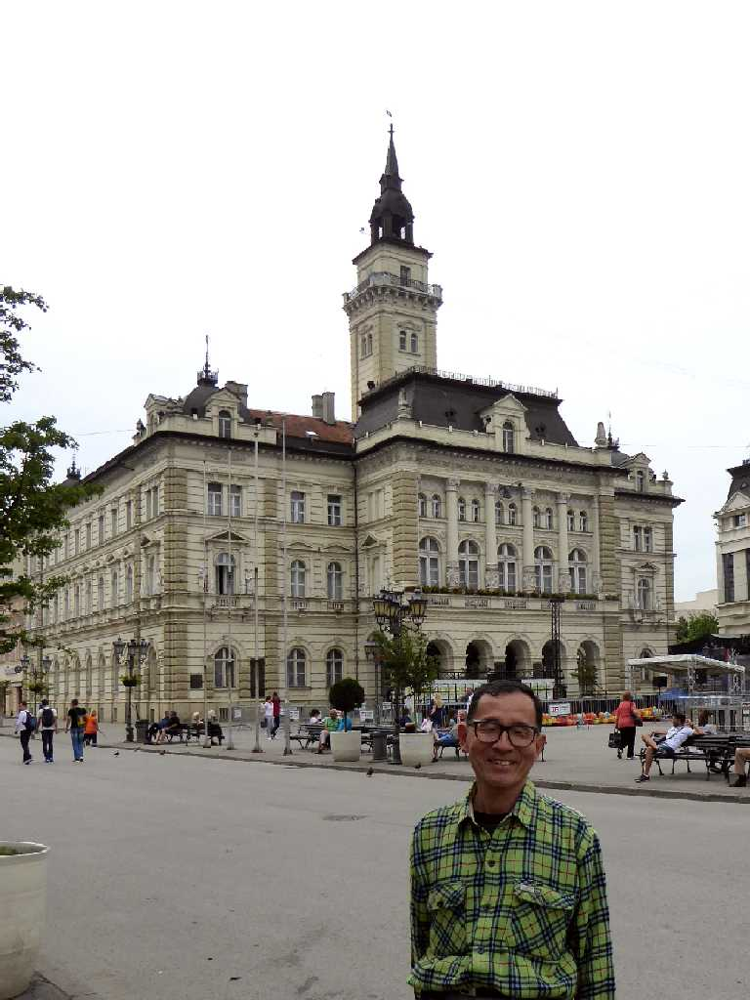

Trg slobode Novi Sad
ノビサドの街はセルビア第二の都市で１６９４年にペトロヴァラディン要塞のドナウ河対岸に築かれセルビア商人で栄えた

City Hall Novi Sad
１８９５年に創られたネオルネサンス様式のノビサド市庁舎

Cathedral Novi Sad
１８９４年に創られた高さ７２mの鐘楼が美しいバロック様式のノビサド大聖堂

Altar Cathedral

June 10 2016 Trg slobode